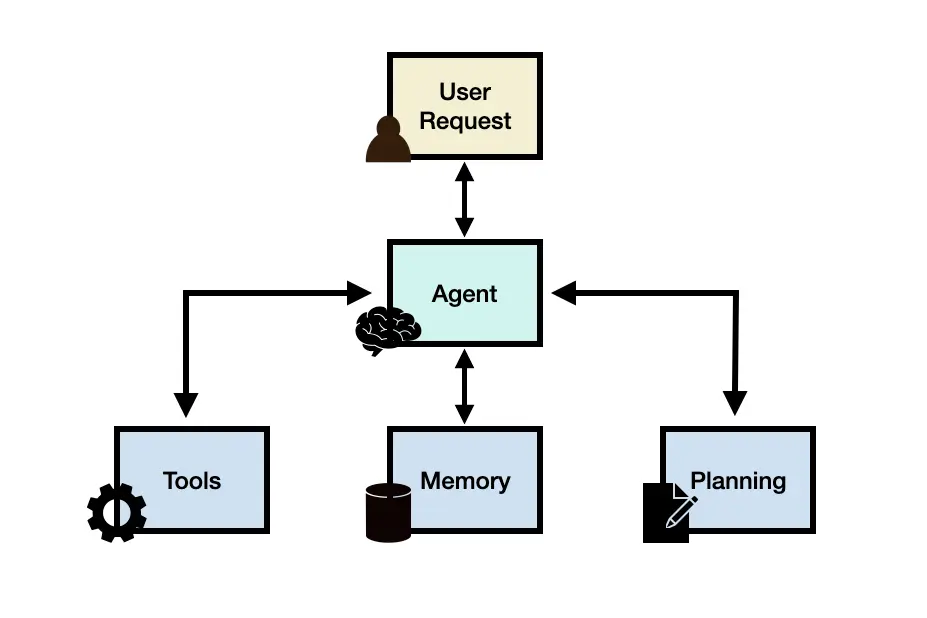

Agent basics
What is an agent?
An AI agent is a system that uses an LLM to decide the control flow of an application. – Harrison Chase on the langchain blog
In the context of large language models, agents are LLM-based systems that can solve complex tasks. Imagine asking a question like:
“What were the key learnings from the Generative AI elective module in WiSe 24/25 at FH Kiel?”
Could you just ask an LLM that question and expect a correct answer?
It is in theory possible, that an LLM could answer that directly, but only if it was trained on this information, that is, if a text describing the module exists, is accessible from the web and was used in training the model. However, usually we can not expect the LLM to have this knowledge.
Let’s think for a moment how a human would answer that(one that did not attend the module). We would probably try to get a copy of the script, maybe we saved the script to our hard drive or other data storage. Maybe we could search the web for a description or text version of the module. Having obtained a copy of the script, we would probably read it. Then, we would try to distill the information hidden therein, to answer the question.
So, for our LLM to answer that question, it needs to be able to perform several tasks: - Searching the web for relevant documents - Reading and understanding a document - Summarizing the content of a document - Answering questions based on the summary of a document
This is where agents come into play. Agents are LLM-based systems that can solve complex tasks by performing several subtasks in sequence, using an LLM to decide which subtask to perform next. In our example, the agent would first search the web for relevant documents, then read and understand them, summarize them and finally answer the question based on the summary.
Agent framework

To facilitate this, an agent system consists of several components:
- Agent: the agent core acting as coordinator
- Planning: Assists the agent in breaking down the complex task into subtasks, deciding which tool to use for each subtask and how to combine the results of the subtasks to answer the question.
- Tools: The tools are functions that the agent can use to perform a specific task. In our example, the tools would be a web search engine and a document reader.
- Memory: The memory is used to store information about previous interactions with the agent. This allows the agent to remember past conversations and use this information in future interactions.
We will describe each of them below.
Agent
This is a general-purpose LLM, that functions as the brain and main decision-making component of an agent. It determines which tools to use and how to combine their results to solve complex tasks. The agent core uses the output of the previous tool as input for the next tool. It also uses an LLM to decide when to stop using tools and return a final answer. The behavior of the agent and the tools, it has at its disposal is defined by a prompt template.
Tools
Tools are functions that the agent can use to perform a specific task. They can be pre-defined or dynamically generated based on the user’s needs. Tools can be simple, such as a calculator, or complex, such as a web search engine. Tools can also be other agents, allowing for the creation of multi-agent systems.
Memory
Memory is used to store information about previous interactions with the agent. This allows the agent to remember past conversations and use this information in future interactions. Memory can be short-term, such as a conversation buffer, or long-term, such as a database. Memory can also be used to store the results of previous tool uses, allowing the agent to reuse them if necessary.
Planning
Planning is the process of breaking down a complex task into subtasks and deciding which tools to use for each subtask. Planning can be done in several ways: